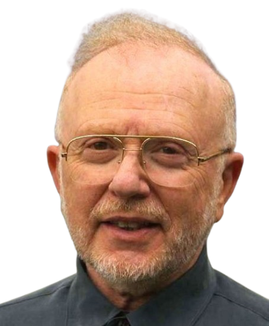

Ukrywanie informacji
Dobry moduł ukrywa sposób, w jaki realizuje swoją odpowiedzialność. Otoczenie zna tylko interfejs, nie wewnętrzne decyzje.

„On the Criteria To Be Used in Decomposing Systems into Modules"
Kryterium dekompozycji: decyzje projektowe, które mogą się zmienić
Moduł A
Moduł B
Moduł C
Interfejs (publiczny)
Ukryte szczegóły implementacji